ENGINEERING BLOG / CHAPTER 01 OF 10
Language, Tokens and Word Vectors
This opening chapter lays the groundwork for everything that follows. It starts with what Natural Language Processing (NLP) actually tries to do, learns how raw text becomes numbers a neural network can consume (tokenization and embeddings), and ends with Word2vec, the method that taught machines to place words in a meaningful space. The next chapter then revisits the recurrent models that dominated before 2017, shows why their sequential nature became a bottleneck, and builds the Transformer, the architecture that powers every modern Large Language Model.
1.1 — What is NLP?
Natural Language Processing is the field concerned with getting computers to read, understand, and generate human language. Before diving into architectures, it helps to anchor on the concrete tasks the field cares about — they are the yardstick against which every model is measured.
Definition. Natural Language Processing (NLP) is the set of techniques that allow machines to process and produce text or speech, turning unstructured language into structured information (and back).
Intuition. If you already think in terms of supervised learning, NLP is just supervised/unsupervised learning where the input (and often the output) happens to be a sequence of words. The central difficulty is that language is discrete, variable-length, deeply contextual, and ambiguous — the word ‘bank’ means something different in ‘river bank’ versus ‘savings bank’.
Example. Three canonical tasks frame this chapter: Sentiment Extraction (classify the polarity of a review as positive/negative), Named Entity Recognition (tag each token as Person / Organization / Location / …), and Machine Translation (map a sentence in one language to another). Notice they span classification, sequence labelling, and sequence-to-sequence generation — the three shapes almost every NLP problem reduces to.
Key insight. Sentiment, NER, and translation map onto sequence→label, sequence→per-token-label, and sequence→sequence respectively. Keep these three shapes in mind: every architecture in this blog is ultimately a different way of producing one of them.
1.2 — NLP tasks overview
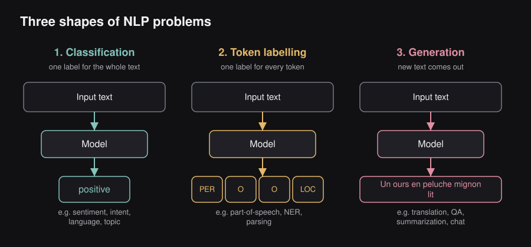
NLP tasks fall into three families.
Classification. The model reads an input text and outputs a single label (in the picture, the number 3 stands for the predicted class). Typical tasks:
- Sentiment extraction
- Intent detection
- Language detection
- Topic modeling
“Multi”-classification. The model reads an input text and outputs one label for every token (in the picture, 5 and 1 are labels attached to different tokens). Typical tasks:
- Part of speech tagging
- Named entity recognition
- Dependency parsing
- Constituency parsing
Generation. The model reads an input text and produces an output text. Typical tasks:
- Machine translation
- Question answering
- Summarization
- Text generation
1.3 — NLP task: Sentiment extraction
In sentiment extraction, the model reads a piece of text such as “This teddy bear is SO CUTE!” and outputs its polarity — here, positive (+).
Datasets. Common datasets are Amazon reviews, IMDB critiques (movie reviews) and Twitter.
Evaluation metrics.
- Accuracy → the percentage of observations that were correctly predicted.
- Precision → of everything predicted positive, the percentage that was correct.
- Recall → of everything that is actually positive, the percentage that was found (correct).
- F1 score → a score that is a function of precision and recall (their harmonic mean).
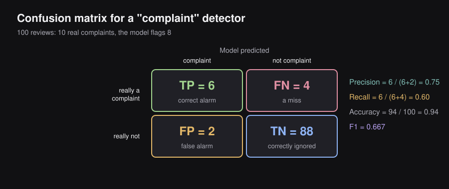
1.4 — NLP task: Named Entity Recognition
In Named Entity Recognition (NER), the model reads a text such as “A cute teddy bear is reading…” and marks the tokens that are entities, giving each one an entity type.
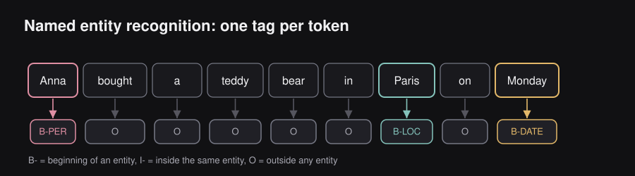
Datasets. The standard datasets are annotated Reuters newspaper articles (CoNLL-2003, CoNLL++).
Evaluation metrics. Accuracy, precision, recall and F1 score — computed at a token level, per entity type.
1.5 — NLP task: Machine Translation
In machine translation the model maps a source sentence to a target sentence: “A cute teddy bear is reading” becomes “Un ours en peluche mignon lit”. This running example will come back at the end of the next chapter, when the full Transformer translates it step by step.
Datasets. WMT’14 English-French and WMT’14 English-German.
Evaluation metrics.
- BLEU → quality of the translated text, similar to “precision”.
- ROUGE → quality of the generated text, similar to “recall”.
- Perplexity → quantifies how ‘surprised’ the model is to see some words together.
The exact formulas can be found in the evaluation chapter of the statistical machine translation textbook at statmt.org (statmt.org/book/slides/08-evaluation.pdf), and are revisited in the final chapter of this blog.
1.6 — High-level timeline
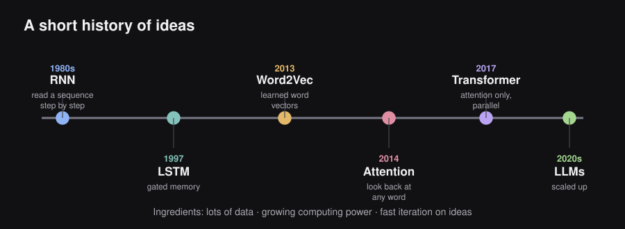
| Year | Milestone |
|---|---|
| 1980s | Recurrent neural networks (RNNs) |
| 1997 | Long short-term memory (LSTM) |
| 2013 | Word2vec |
| 2017 | Transformers |
| 2020s | Large Language Models |
The early entries (RNNs, LSTM) are the theoretical foundations. What made the later entries possible: lots of data, growing computing power, and fast iterations on ideas.
1.7 — Tokenization
A neural network cannot consume raw characters; it needs a finite vocabulary of discrete units mapped to integer IDs. Tokenization is the process that performs this split.
Definition. Tokenization is the process of breaking a piece of text into smaller units called tokens (words, subwords, or characters), each of which is assigned an integer ID from a fixed vocabulary.
A token is an indivisible unit of text — a word, subword or character — that is part of a predefined vocabulary. A tokenizer divides text into tokens of an arbitrary level of granularity. Two special tokens appear everywhere: the unknown token [UNK] represents unknown pieces of text, while the padding token [PAD] is used to fill empty positions to ensure consistent input sequence lengths. For example, “this teddy bear is reaaaally cute” may become this | teddy bear | is | [UNK] | cute | [PAD] | ... | [PAD].
Intuition. There is a tension between two extremes. Word-level tokens are intuitive but give an enormous vocabulary and choke on unseen words (‘out-of-vocabulary’). Character-level tokens never hit an unknown symbol but produce very long sequences with little meaning per token. Subword tokenization (e.g. Byte-Pair Encoding, WordPiece) is the sweet spot: frequent words stay whole, rare words are decomposed into reusable fragments.
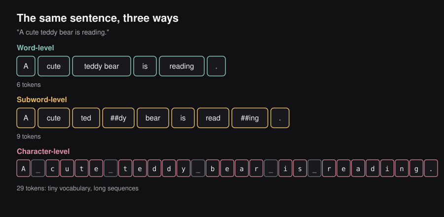
The same sentence at four levels of granularity
Take the sentence “A cute teddy bear is reading.”
- Arbitrary:
Acuteteddy bearisreading.— a tokenizer may group pieces however it likes (here “teddy bear” is kept as one unit). - Word:
Acuteteddybearisreading. - Sub-word:
Acuteted##dybearisread##ing.— the##marks a piece that continues the previous one. - Character:
A_cute_teddy_bear_is_reading.
Tokenization summary
| Method | Pros | Cons |
|---|---|---|
| Word-level | Simple; interpretable (easy to interpret, short sequences) | Risk of OOV; does not leverage knowledge of the root (word variations not handled); large vocabulary size |
| Subword-level (e.g. WordPiece, BPE) | Leverages common prefixes and suffixes; learned from the data; intuitive embeddings | Risk of OOV, though less than word-level; tokenization more complex; increased sequence length |
| Character-level | Small chance of OOV; robust to CASinG anD MIspeliNGs; small vocabulary size | Makes computations slower (much longer sequence length); embeddings not interpretable (patterns are hard to interpret because too low-level) |
| Byte-level (e.g. ByT5) | No out-of-vocabulary concerns; small vocabulary size | Much longer sequence length; patterns hard to interpret because too low-level |
Byte-Pair Encoding (BPE) and Unigram are commonly-used subword-level tokenizers.
Example. Byte-Pair Encoding starts from characters and iteratively merges the most frequent adjacent pair. The rare word ‘unbelievable’ might become [‘un’, ‘believ’, ‘able’] — three known pieces — so the model can still represent it even if it never saw the whole word during training.
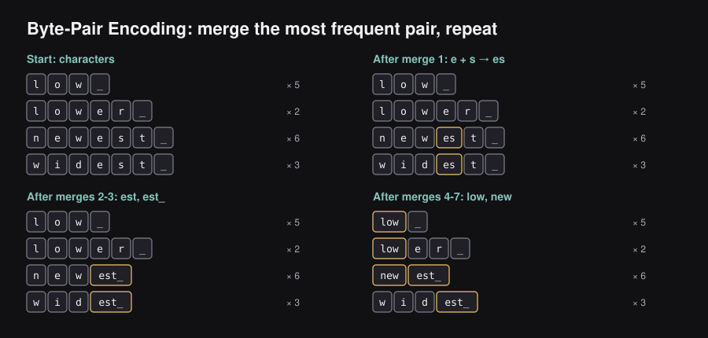
Key insight. Subword tokenization gives a fixed, modest vocabulary while still handling any word, including ones never seen in training. This is why every modern LLM uses it.
1.8 — Token representations: one-hot versus learned embeddings
Once we have token IDs, we need to turn them into vectors that capture meaning. A one-hot vector carries no notion of similarity (‘cat’ and ‘dog’ are as far apart as ‘cat’ and ‘democracy’). Dense embeddings fix this.
Definition. A word embedding is a dense, low-dimensional real-valued vector representing a token, learned so that semantically similar tokens lie close together in the vector space. More generally, an embedding is a numerical representation of an element (e.g. token, sentence) characterized by a vector .
We have integer IDs, but an ID like 342 is a label, not a meaning. If we fed the number 342 into a network, the network would think that word 342 is “bigger” than word 341 and “closer” to it, which is nonsense. So what is the most natural way to turn a word into numbers without implying a false order?
The classic answer is one-hot encoding. Take a vocabulary of words. Represent each word as a vector of length that is all zeros except for a single 1 at the word’s own position. With a six-word vocabulary [A, cute, teddy, bear, is, reading]:
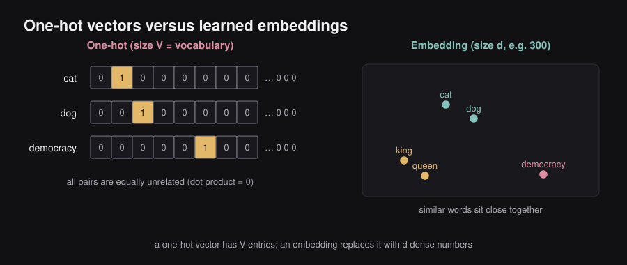
- A →
[1, 0, 0, 0, 0, 0] - cute →
[0, 1, 0, 0, 0, 0] - teddy →
[0, 0, 1, 0, 0, 0]
This avoids the false ordering, but it has two serious problems.
Problem 1: size. Real vocabularies have tens of thousands of words, so every word becomes a vector with tens of thousands of entries, almost all of them zero. That is wasteful and slow.
Problem 2: no notion of similarity. The dot product of any two different one-hot vectors is exactly 0. So to the model, cat is exactly as unrelated to dog as it is to democracy. The encoding throws away everything we know about meaning: that cats and dogs are both pets, that happy and glad are near-synonyms.
We want a representation where words with similar meanings get similar vectors, and where the vectors are short. Such a representation is called a word embedding: a dense, low-dimensional vector of real numbers for each token, learned so that similar words end up close together.
An embedding turns a vector of length (say 50,000 numbers, nearly all zero) into a vector of length (say 300 numbers, all meaningful). Mechanically, an embedding layer is just a big table with rows and columns; looking up a word means reading out its row. The big question is: where do the numbers in the table come from? The answer is that they are learned from text, and the guiding principle for learning them is the next section.
1.9 — Meaning as geometry: the idea behind embeddings
The linguist J. R. Firth summed up a powerful idea in 1957: “You shall know a word by the company it keeps.” This is the distributional hypothesis. Think about the unknown word tezgüino in these sentences: “A bottle of tezgüino is on the table”, “Everyone likes tezgüino”, “Tezgüino makes you drunk”, “We make tezgüino out of corn.” Without a dictionary you have already guessed it is an alcoholic drink, because of the words around it. Words that appear in similar contexts tend to have similar meanings, so if a model can learn to predict context, it will be forced to give similar vectors to words that share contexts.
Describing something with a few numbers
To see why numbers can capture meaning, imagine describing fruit with just three scores from 0 to 1: sweetness, crunchiness and size. An apple might be , a grape and a watermelon . Even with three numbers we can ask meaningful questions: which fruit is most like an apple? We compare the vectors. A learned embedding does the same thing, except that the model decides for itself what the dimensions should be, and it uses 100 to 1,000 of them instead of three. Individual dimensions are rarely cleanly interpretable (“dimension 17 = royalty”) but the pattern across dimensions carries meaning.
Comparing meanings with cosine similarity
Once words are vectors we can compare them with cosine similarity, which measures the angle between two vectors: A small angle (similarity near 1) means similar tokens (for instance ‘cute’ and ‘teddy bear’), an angle near 90° (similarity near 0) means unrelated tokens (for instance ‘teddy bear’ and ‘airplane’), and an angle near 180° (similarity near −1) means dissimilar tokens (for instance ‘cute’ and ‘unpleasant’).
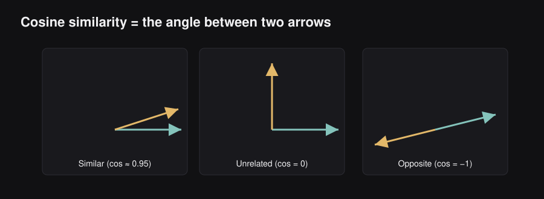
Here is a toy example with three invented traits (“is a living thing”, “is small”, “is political”):
| Word | living | small | political |
|---|---|---|---|
| cat | 0.9 | 0.8 | 0.0 |
| dog | 0.9 | 0.6 | 0.0 |
| democracy | 0.0 | 0.0 | 0.9 |
Cosine similarity of cat and dog: the dot product is ; the lengths are and ; so the similarity is . Cosine similarity of cat and democracy: the dot product is , so the similarity is exactly . The embedding has captured what one-hot vectors could not: cats and dogs are alike, cats and democracy are not.
Two central ideas of this whole chapter: (1) we can represent words (and later sentences, images, people, songs) as vectors of numbers, which machines handle well; and (2) we can measure how similar two vectors are, quickly and mathematically, with cosine similarity or the dot product.
What do trained embeddings look like?
A trained embedding for a word is simply a list of, say, 50 to 300 numbers such as [0.50, 0.69, -0.60, -0.02, 0.60, ...]. Staring at the raw numbers tells you almost nothing. But if you color-code each number (warm for positive, cool for negative) and line up several words, patterns jump out: man and woman have strongly similar color patterns, king and queen share a pattern that the others lack (perhaps a vague sense of royalty), and a non-person word like water looks quite different. Nobody told the model about gender or royalty. These patterns emerged on their own from the statistics of which words appear near which.
Embedding arithmetic: the famous analogies
The most celebrated property of word vectors is that directions in the space carry meaning. If you take the vector for king, subtract the vector for man, and add the vector for woman, the result lands closest to the vector for queen. In our toy world with traits (royal, male, female, adult):
| Word | royal | male | female | adult |
|---|---|---|---|---|
| king | 0.9 | 0.9 | 0.1 | 0.8 |
| man | 0.1 | 0.9 | 0.1 | 0.8 |
| woman | 0.1 | 0.1 | 0.9 | 0.8 |
| queen | 0.9 | 0.1 | 0.9 | 0.8 |
, which is exactly queen. Real embeddings are messier: the result is only close to queen, and “close” means that among all, say, 400,000 words in the vocabulary, queen is the nearest neighbour (with throne, princess and monarch also high on the list).
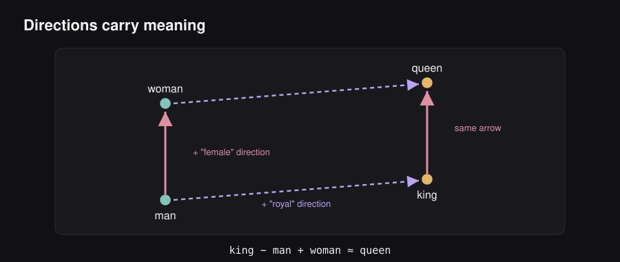
1.10 — Language modeling: the parent of word embeddings
Before looking at Word2vec, we need to meet its conceptual parent: the language model. A language model is any system that, given some words, predicts the next one. You use one every day: the next-word suggestions above your phone’s keyboard. Type “The cat sat on the” and the keyboard offers mat, floor, sofa.
Notice something important. The model does not output a single word; it outputs a probability for every word in its vocabulary. The keyboard then shows the few with the highest scores.
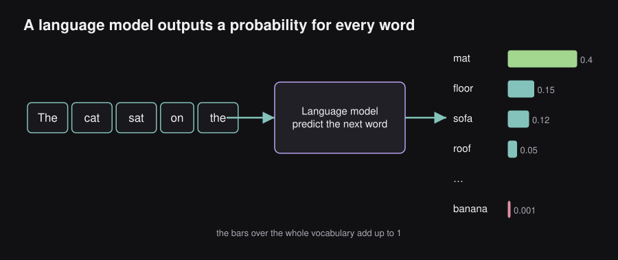
The old way: counting (n-grams)
Before neural networks, language models simply counted. A trigram model estimates as: (how many times “sat on the mat” occurs in a huge text) divided by (how many times “sat on the” occurs). It works for common phrases but breaks down for two reasons. First, most long phrases never appear in any text, so the counts are zero, even though the sentence is perfectly sensible. Second, it has no idea that cat and dog are similar, so knowing that “the dog sat on the mat” is common tells it nothing about the cat.
The neural way: lookup, compute, project
Around 2003 researchers (Bengio and colleagues) showed that a neural network could do better. Their model takes three steps to predict the next word, and these same three steps are still recognisable in today’s LLMs:
- Look up embeddings. Each input word is replaced by its row in an embedding table.
- Calculate a prediction. The embeddings go through a network that mixes them into one summary vector.
- Project to the vocabulary. That summary is multiplied by another matrix to produce one score per word in the vocabulary, and softmax turns the scores into probabilities.
The wonderful by-product is that the embedding table in step 1 is learned during training. To predict next words well, the network is pushed to give similar vectors to words that can be substituted for each other. That table is exactly the word-embedding matrix we want. So embeddings can be thought of as a free by-product of teaching a network to predict words.
Language models can train on raw text
Most machine learning needs hand-labelled data, which is costly. Language modeling needs none: the “label” for each training example is simply the next word in a text that already exists. Books, Wikipedia and web pages provide effectively unlimited training data. This “free labels from the data itself” trick is called self-supervised learning, and it is the foundation of every LLM.
To create training examples we slide a window along running text. With the sentence “the quick brown fox jumps over the lazy dog” and a window of three words, the first training example is (input: the quick, label: brown), the next is (input: quick brown, label: fox), then (brown fox → jumps), and so on.
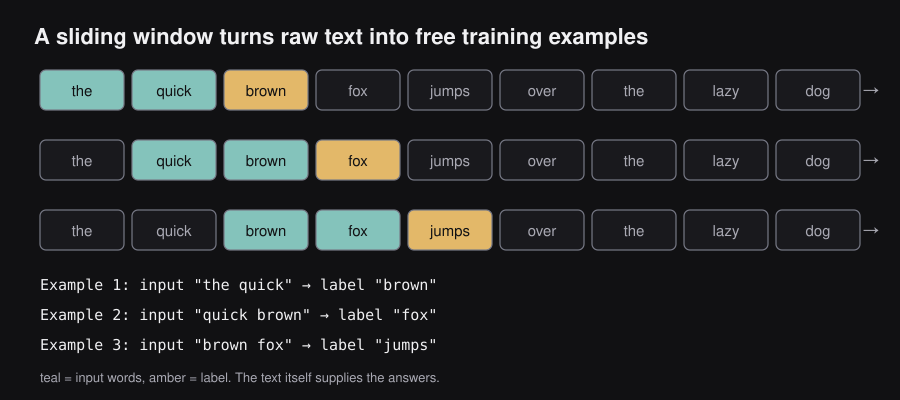
Looking both ways
Predicting only from the words before the blank discards useful information. Consider: “She wore a ___ coat.” You might guess red, black, long. Now add the words that come after: “She wore a ___ coat because it was snowing.” Suddenly warm, thick and heavy become the best guesses. Words on both sides of a blank are informative. This insight leads directly to the two Word2vec training setups in the next section, and, much later, to BERT (Chapter 4), which is trained to look in both directions.
1.11 — Word2vec: learning embeddings by predicting context
Word2vec is a neural network trained with a proxy task over billions of words worth of text; what it learns is an embedding layer. It was introduced in 2013 (“Efficient Estimation of Word Representations in Vector Space”, Mikolov et al.) and is a family of methods for learning word embeddings quickly from billions of words of text. Its recipe has two parts: invent a proxy task (a small prediction problem that we do not actually care about), train a very shallow network on it, and keep the network’s embedding table as the real prize. Two proxy tasks were proposed.
Intuition. The guiding principle is the distributional hypothesis: ‘a word is known by the company it keeps.’ Words that appear in similar contexts should get similar vectors. Word2vec operationalizes this by training a shallow network to predict a word from its context (CBOW) or the context from a word (Skip-gram).
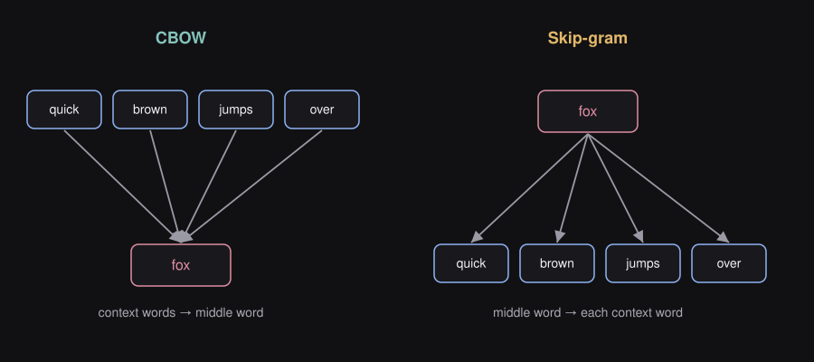
- CBOW (Continuous Bag of Words): given the surrounding context words, predict the word in the middle. From “the quick ___ jumps over”, predict fox. The context is treated as a “bag”: the order of the context words is ignored.
- Skip-gram: given the middle word, predict each of the surrounding words. From fox, predict quick, brown, jumps, over, one prediction at a time. Skip-gram produces more training examples from the same text and tends to work better for rarer words.
Generating the training data with a sliding window
Choose a window size, say 2 words on each side. Slide it across the text. At each position the middle word is the “input” and each neighbour inside the window is a separate “target”. For the sentence “the quick brown fox jumps over the lazy dog” with the window centred on fox, Skip-gram produces four training pairs: (fox, quick), (fox, brown), (fox, jumps), (fox, over). Slide one position to the right and you get four more pairs centred on jumps. After sliding over a large corpus you have a gigantic list of (word, neighbour) pairs. Each pair is a tiny lesson: “these two words appear near each other”.
The architecture: a network with one hidden layer
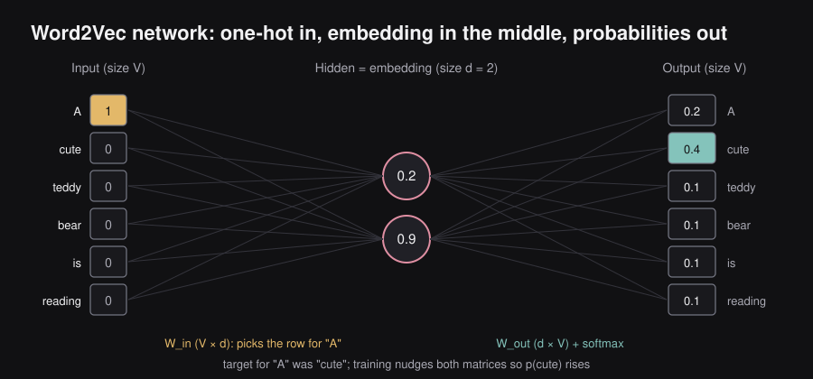
The network has just three layers:
- Input (size ): the one-hot vector of the input word.
- Hidden layer (size ): a small layer, with typically between 100 and 300. There is no non-linearity here. The hidden values are simply the embedding of the word.
- Output (size ): a probability for every word in the vocabulary, produced with a softmax.
Let us trace a toy example with a six-word vocabulary [A, cute, teddy, bear, is, reading] and an embedding size of . (The numbers below are made up to show the mechanics.)
- The input word is A, a one-hot vector
[1, 0, 0, 0, 0, 0]. - Multiplying a one-hot vector by a matrix just selects one row of the matrix. The input-side matrix () has a row for each word, so multiplying picks the row for A, say
[0.2, 0.9]. That is the embedding of A: the hidden layer. - The hidden vector is multiplied by an output-side matrix () and passed through softmax, giving six probabilities such as
[0.2, 0.4, 0.1, 0.1, 0.1, 0.1]. The model is saying “after A, I think the neighbour is cute with probability 0.4”. - The true neighbour was cute, so the ideal output is
[0, 1, 0, 0, 0, 0]. The gap between the prediction and this ideal is the error, and training nudges both matrices a little to shrink it.
Repeat for the next example: input cute [0, 1, 0, 0, 0, 0] selects its row, say [0.8, 0.4], producing probabilities [0.2, 0.2, 0.2, 0.1, 0.2, 0.1]; the true neighbour was teddy, so we nudge again. Run this over billions of examples and the rows of the input matrix settle into meaningful vectors.
The math: the Skip-gram probability
Skip-gram models the probability of an output (context) word given an input (center) word with a softmax over the whole vocabulary:
- is the input vector (the embedding row) of the center word.
- is the output vector of word : one row of the output-side matrix. Every word has two vectors, one used when it is the center, one used when it is a neighbour.
- is a dot product: a score for “how well does fit next to ?”
- The denominator adds up the exponentiated scores of all words, which makes the answers into proper probabilities.
In words: the more the context vector points in the same direction as the center vector, the more probable that pair is.
Training adjusts all the vectors so that real neighbours get high probability. Words that appear in the same contexts (say dog and cat, both near pet, fed, barked/purred) are pushed toward the same region of the space.
There is a catch. The denominator sums over every word in the vocabulary. With a vocabulary of 100,000 words, each training example would require 100,000 dot products, and we have billions of training examples. This is far too slow. The next section shows the trick that makes Word2vec fast.
1.12 — Making it fast: negative sampling
The expensive step is the final one: computing a probability for every word in the vocabulary. The key insight of Word2vec is that we do not actually care about next-word prediction; we only want good embeddings. So we can change the task into something much cheaper.
Old task: given not, predict which of 100,000 words is its neighbour (a 100,000-way classification).
New task: given a pair of words, say whether they are neighbours: output 1 for “yes, they appeared near each other” and 0 for “no”.
This turns a giant multi-class problem into a simple yes/no problem (logistic regression), which is dramatically cheaper because for each example we only touch a handful of vectors rather than all .
The “always say yes” loophole
If every training example is a real neighbouring pair (label 1), a lazy model can score 100% by outputting 1 for everything, learning nothing, and producing garbage embeddings. We must also show it pairs that are not neighbours, with label 0. These are negative samples.
How do we get negatives? We simply pick random words from the vocabulary. For the real pair (bear, cute), we make fake pairs like (bear, volcano) and (bear, tax) and label them 0. Random words are almost never true neighbours, so this is a good approximation. (In the original implementation, words are drawn with probability proportional to their frequency raised to the 3/4 power, which draws rare words a bit more often than raw frequency would, and very frequent words such as the are randomly skipped more often in the positive data.) The combination of Skip-gram and this trick is called Skip-gram with Negative Sampling (SGNS), and it is what people usually mean by “Word2vec”.
One training step, with numbers
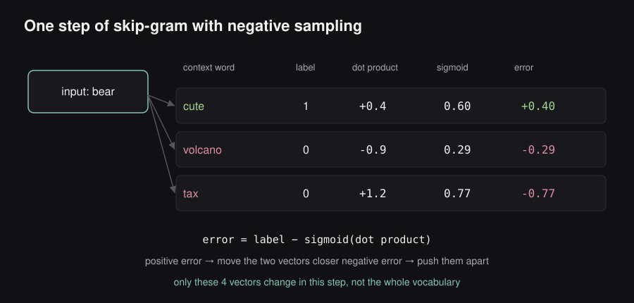
Word2vec keeps two tables, both of size : an Embedding matrix (used when a word is the input) and a Context matrix (used when a word is the output). Both start filled with small random numbers. One step goes like this, using one positive pair and two negatives:
- Look up. The input word is bear: take its row from the Embedding matrix. The three output words are cute (real neighbour), volcano and tax (random negatives): take their rows from the Context matrix.
- Score with dot products. Suppose the dot products with bear are for cute, for volcano, for tax.
- Squash with a sigmoid so each score becomes a probability: , , .
- Compute the error as (label − prediction): for cute it is (should have been higher), for volcano it is , and for tax it is (a big mistake: the model thought bear and tax were neighbours).
- Nudge the vectors in proportion to the error. A positive error moves the two vectors closer together; a negative error pushes them apart. Written as a rule, with a small step size (the learning rate):
Here is the label (1 or 0), is the prediction, so is the error. The first rule says “move the input word’s vector toward the output word’s vector if the error is positive, away if negative”; the second does the same for the output word’s vector. Only four vectors change per step, instead of the whole vocabulary.
Behind the scenes, this is minimising the loss : be confident about the real neighbour, and confidently say “no” to the fakes. After making one step for every pair in the dataset, and repeating over several passes (“epochs”), the training stops. We throw away the Context matrix and keep the Embedding matrix: those rows are the word vectors.
The two knobs: window size and number of negatives
- Window size. A small window (around 2 to 15 words) teaches the model about interchangeability: words with similar embeddings could replace each other in a sentence. Antonyms such as good and bad often end up close together, because they appear in nearly identical contexts. A larger window teaches relatedness (topic): words like doctor and hospital appear together even though one cannot replace the other. A typical default is 5 words on each side.
- Number of negative samples. The original authors recommended 5 to 20 negatives per positive pair for small datasets, and found 2 to 5 enough for large datasets. A common default is 5.
1.13 — What embeddings give us, and what they cannot do
Word2vec was a landmark because a tiny model, trained fast on raw text, produced vectors that improved almost every NLP task. You could download pre-trained vectors (Word2vec itself, or a similar family called GloVe) and plug them into your own model as a starting point instead of learning meaning from scratch. This is an early example of transfer learning: knowledge learned on one huge task (predicting context) re-used on many small tasks.
The idea even escaped language. Online marketplaces and music services have used the same trick on non-text data: treat each item (a rental listing, a product, a song) as a “word”, and each user session (the list of items a person clicked or played in a row) as a “sentence”. Train Word2vec on those sessions and items that are used in similar situations receive similar vectors, which gives a powerful recommendation engine.
But Word2vec has real limitations, and each one points to a later breakthrough in this blog:
| Limitation | What it means | What fixed it |
|---|---|---|
| Static vectors | Every occurrence of bank gets the same vector, whether it means a river bank or a savings bank | Contextual representations: attention, the Transformer (Chapters 2 to 4) |
| Word order is ignored | The context is a bag; “dog bites man” and “man bites dog” look the same | Sequence models: RNNs, then Transformers with positional encodings (Chapter 2) |
| No handling of unseen words | A word that was not in the vocabulary has no vector | Subword tokenization (section 1.7) |
| Learned bias | Vectors faithfully absorb stereotypes present in the text they were trained on | Careful data curation, alignment (Chapter 7) |
Word2vec embeddings are static: one fixed vector per word, regardless of the sentence. Making a word’s representation depend on its context is exactly what attention and the Transformer will achieve in the next chapter. Inside a modern Transformer there is still an embedding table at the very start (with rows and columns), but it is learned together with the rest of the model rather than separately, and the layers that follow turn those static starting vectors into rich, context-aware ones.